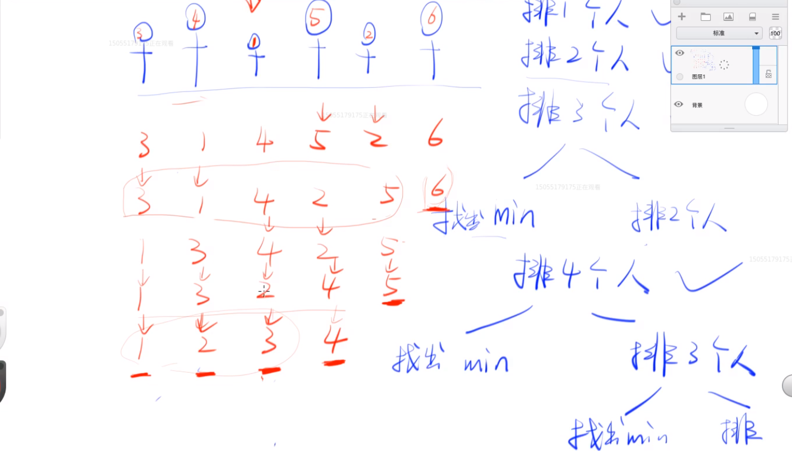

排序算法输出两个原则：
2、js程序实现：
function bubbleSort(array) {
var length = array.length,
i,
j,
temp;
for (i = length - 1; 0 < i; i--) {
for (j = 0; j < i; j++) {
if (array[j] > array[j + 1]) {
temp = array[j];
array[j] = array[j + 1];
array[j + 1] = temp;
}
}
}
return array;
}
2、js程序实现：
(1)、直接插入排序 JavaScript 实现代码：
function insertionSort(array) {(2)、减少交换次数插入排序法：
function insertionSort(array) {（3）、JS利用二分查找法
function insertionSort2(array) {2、js程序实现：
方法一、首先用最笨的方法，每一个桶只能放相同的数字，最大桶的数量为数组中的正数最大值加上负数最小值的绝对值。
function bucketSort(array) {方法二：每个桶存放一定范围的数字，用 step 参数来设置该范围，取 step 为 1 就退化成前一种实现方式。
/* * @array 将要排序的数组满足以下条件：
a <- {
'0' : 23
'1' : 34
'2' : 239
'3' : 1321
'4' : 90
'length' : 5
}
min <- a['0']
index <- 1
if a[index] < min
min <- a[index]
end
print min
数据的结构；一般来说数据结构是，我们要解决一个跟数据相关的问题，分析这个问题，想出对应的数据结构，分析数据结构，想出算法；
一般前端用到的数据结构有数组和对象；
（体育委员两手比较法）冒泡排序法：
伪代码实现：
（体育老师一指禅法）选择排序法：
起扑克牌算法：
奇数排序（强迫症收扑克牌）算法：
快排：